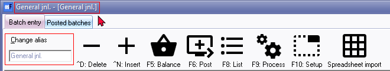
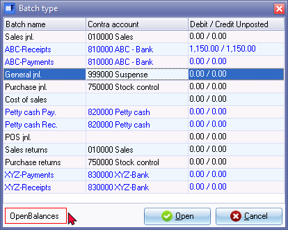

Change alias (Batch name)
The alias provides the opportunity for you to add an unique name for the batch type. For example, you may use a specific batch type (e.g. general journal) for many different transactions and may post many general journal transactions in a month or even in a year.
|
|
Auto-alias - Setting may also be activated on the F10:Setup - Advanced tab - "Options for this batch". This will automatically generate the system date as the alias (batch name) (e.g., “20210331”) for the batch. |

|
|
Auto generated - Alias in Receipts batches - TR00001, TR00002,etc. These aliases prefixed with "TR" (consisting of seven (7) digits) will automatically be generated when the "Receive payment" option is used in Open item link context menu. See - |
The alias enables you to easily identify and select specific batches (journals). The alias (batch name) will be displayed on the bottom section next to the Open and Cancel buttons of the Batch type selection screen.
You may need to identify and select a specific batch type from the following options:
- Tools → Export posted batches option - Batches List Lookup screen to export specific posted batches.
- Posted Batches tab of the Batch entry screen - View the details and/or print the batch type report for a specific batch.
- Import a posted batch (F9:Process) - To Import all the transactions of a specific batch which have already been posted / updated to the ledger.
- Tools → Global processes → Reverse posted batch/document. This will cancel (unpost) the posted batch and import it to the Batch entry screen for the selected batch.
|
|
If you do not utilise this feature to change the alias, you may not find it easy to identify the correct batch. |

The alias is displayed directly after the batch type name in square [ ] brackets on the title bar of a selected batch type. For example, if you access the "General jnl.", "General jnl. - [General jnl.]" will be displayed on the title bar.

After changing the alias for a batch type, the alias will be displayed in the square brackets [ ] on the title bar. For example, if we use the General journal to record the Opening balance transactions, you may change the alias to display the "General jnl. -[OpenBalances]" description. 
You will then be able to identify the Batch number by the alias on various options.
|
|
When selecting a batch on the Batch entry selection screen, the Alias will be displayed on the left side of the Open and Cancel buttons. If the alias was not changed, the name of the selected batch type will be displayed.  |